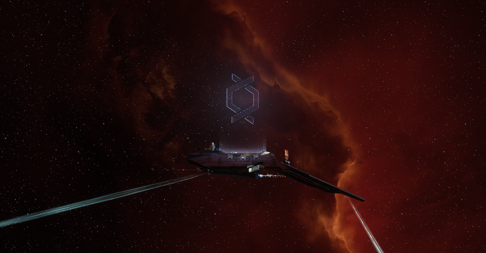
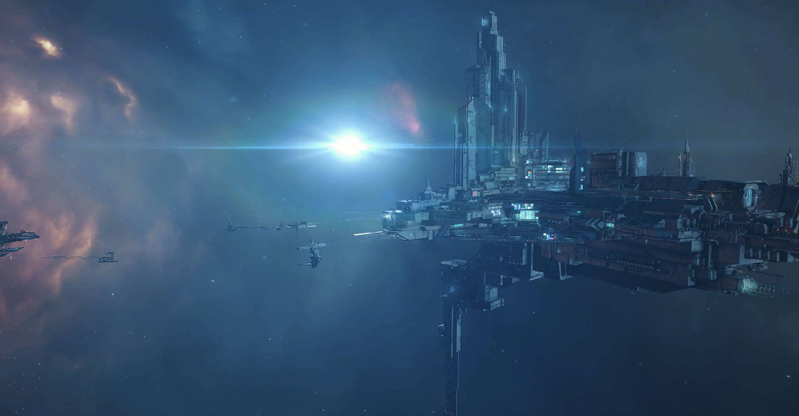

Docking bay 2K30606R
Jita 4-4, Jita, Kimotoro, The Forge
The beating heart of New Eden.
This is where the voyage begins.
Editor's note:
On the left, you will follow the journal of a voyager, taken during the Sightseeing on the path of Katia Sae, Safe Thrill Experience.
On the right, you will follow the host for the Sightseeing on the Path of Katia Sae, Safe Thrill Experience, Alena Eveymon.
The shuttle sat silently on its berth. The hull was a Caldari standard design, but it had been modified by Sawa Laboratories crews to provide a better view from the passengers’ compartment with floor to ceiling viewports, extra comfort seats and advanced projector technology. The livery was dark but for a pair of orange stripes, inconspicuous and simple.
The crew was preparing it for the upcoming trip. The last supplies were loaded and the cleaning crews left the ship interiors in pristine conditions. Everything was ready to welcome the guests aboard.
The Voyage could begin.
System: Jita
Constellation: Kimotoro
Region: The Forge
Security Status: 0.9
I’m in the lounge of New Eden Voyages and they have a view over the docking bay itself! Our ship looks kind of small, it’s no big battleship, but a small shuttle.
The call went out, it’s time! We are boarding. So excited!
Our host, she said she is called Alena, is rather cheerful, and the staff is very polite. I feel so pampered! They offered us a welcome drink once we settled in our seats.
I was readying from the pamphlets and the information mails that they modified the standard shuttle to give us a better view of the outside. And, even more amazing, we have a real Capsuleer pilot driving us! Albeit apparently they are rather silent and invisible. I wonder if they wear a white helmet and white bodysuit.
And we are on our way! The Voyage has officially began!
"Welcome everyone! New Eden Voyages is happy to welcome you on board the NEV Voyager I."
"My name is Alena and I'll be your host for this voyage. Be ready to be amazed and have an experience that you won't forget!"
"We are preparing to leave Jita 4-4 and we will be soon on our way. While we wait, I and the whole crew would like to wish you a pleasant stay."
"If you have any question or concern, please reach out to our staff, we will be happy to help."

Once everyone was on board and the ship was sealed, the shuttle began its undocking operations. It slowly rose from its berth before it headed for the busy access corridor. The movements were smooth and the guests barely felt the change of vibrations under their feet.
Refreshments were distributed but many gasped and turned in awe as they exited the massive station. They were right in the thick of the crowded space around Jita 4-4, and massive ships, from cargo to battle ones, loomed over the shuttle as it sped away, heading for the New Caldari gate.
System: Saisio
Constellation: Okomon
Region: The Forge
Security Status: 0.7
We are en route to the Monument to Katia Sae. The first stop. I like to believe that the little star up there is the statue itself, I heard its golden and reflecting the light of the Saisio’s sun.
It’s… blinding.
The statue is massive and golden, and it does reflect the light of the Saisio’s sun just as I read.
And I feel small.
It’s as massive as what Katia Sae did. Visiting all systems of New Eden in 10 years… mind blowing if you think many don’t even leave their system, or worse, their planets.
It’s inspiring but I also feel cowed. Cowed because I fear could never be that great, but at the same time I’m hopeful I can do something just as great, in my own dimension, at least.
Next stop Iyen-Oursta!
"Dear guests, we just entered the Saisio system and we are en route to the Katia Sae Monument."
"The first stop of our voyage is the Monument of Katia Sae. The Stargazer herself. Built in YC121, this monument celebrates the achievement of this one pilot: visiting each and every system of our cluster, wormholes included. A massive undertaking, one that consumed many years of her life but which set her as a unique part of New Eden's history."
"The statue depicts Katia herself as she reaches out for the stars. Close to the monument, you can see the Abagawa gate, where it all began: this is where, on December 1st YC111, she started her 10 years journey."

The shuttle circled the statue slowly, in a steady spiral that brought it closer and closer at first, before leading it away. The golden light washed in the passenger’s compartment as the statue filled the viewports.
The small shuttle turned and on its way it went. It sped through system after system, cold blueish hues giving space to greener tints. They had now been in flight for a few hours and another round of refreshments was distributed. The service of New Eden Voyages was considered top of the line and that included in between stops refreshments as well as two full meals by a starred chef.
System: Iyen-Oursta
Constellation: Gallente Border Zone
Region: Sinq Laison
Security Status: 0.8
Silence.
But what there is to say at the monument of one of the most climatic and bloody battles that this side of New Eden had ever seen?
I’m thankful for who fought at that time, and have huge respect for their sacrifice, but I hope it won’t happen again.
Next stop Lanngisi!
"Dear guests, we just entered the Iyen-Oursta system and we are en route to the Battle of Iyen-Oursta Monument."
"Let peace prevail and nevermore war darken these stars. These are the words etched in the Monument to the Battle of Iyen-Oursta. In BYC10, this system saw one of the most climatic battle in the Gallente-Caldari War: Gallente Federation and the Caldari State fought over the control of the system which was considered, by both parties, to be strategically important."
"However, this battle hadn't been known only for the bloodshed, but it also marked the first time capsule-controlled vessels were fielded on the battlefield by any of the four main Empires. History had changed right here."

Nobody on board the ship could have been there but many, of Gallentean or Caldari descent, had heard the tales. Some lucky ones might have met people that had been there, or in the least, people that had spoken with soldiers and seaman that had participated in the battle. Whatever the lineage, everyone could feel the sacredness of the place, a place where space, a battlefield and a graveyard all came together as one.
Once the sobering stop was behind the shuttle and they had entered the second longest leg of the trip, it was time for the first full meal. Guests took their seats, and lunch was served. It mixed cuisine from all over New Eden: the practical and cold dishes of Caldari descent intermixed the savoury and warm dishes of Gallentean descent, the spicy and hot Minmatar dishes shared a spot together with their golden and dusty counterparts of Amarrian descent.
System: Lanngisi
Constellation: Ani
Region: Metropolis
Security Status: 0.5
FYI: the food is good. I totally did not ask for another of those lovely sweet cakes with purple and green topping.
Anyway!
I love science and I had participated in Project Discovery, so seeing my efforts somewhat recognized in a monument… it makes me proud!
The monument feels subdued, kind of small, compared to achievements of Project Discovery. But at the same time, science isn't flashy, it get things done.
These projects can really help science move forward. There should be more of these.
Next stop Amarr!
"Dear guests, we just entered the Lanngisi system and we are en route to the Project Discovery Monument."
"The Citizen Science project. This is what Project Discovery is and this monument celebrates its first Phase."
"The first of its kind, Project Discovery was launched by the Sisters of EvE in YC118. Capsuleers and normal citizens alike had been able to make science progress by helping scientists all over the cluster catalogue a vast amount of stellar signatures and genetic samples."
"With its millions of submissions, Project Discovery stands as one of a kind in New Eden, a success story of science and research."

This monument was simpler, with the logo of Project Discovery standing, in glowy blue, atop a small metal grey platform. The ship circled slowly, letting people take in the monument as much as the station and the moon sitting nearby.
Once the time was up, the shuttle once again departed and sped way, running through system after system: the red and brown hues of Metropolis gave space to the golden hues of Domain. Guests mingled and chatted, enjoyed the refreshments and relaxed as they headed for their next stop.
System: Amarr
Constellation: Throne Worlds
Region: Domain
Security Status: 1.0
It feels like a joke. Truly! But apparently this Chribba guy is considered the most honest of all Capsuleers. You think of Capsuleers as bloodthirsty, warmongering and volatile people, not as peaceful and honest.
Impressive, isn't it?
But I guess it meant something as they built him this massive statue, in the style of Katia Sae’s one. Only that, instead of a star system, he has a little Revelation dreadnought mining holo asteroids. It’s kind of cute? In it’s own way?
Also, we are in Amarr and everything is so golden… golden the nebula, golden the light, golden the ship.
Golden.
All golden.
Next stop Molea!
"Dear guests, we just entered the Amarr system and we are en route to the Chribba Monument."
"The most honest Capsuleer. A title nobody else had claimed ever since. A well-known miner in the early days of Capsuleers, Chribba went on to become a renown neutral third party in transactions between Capsuleers. Titans and supercarriers, precious and unique memorabilia, all kind of things went through the hands of this man, but not once he broke his promise to be a neutral third party."
"This monument is a testament to his legacy of trust and peaceful industry."
The shuttle slowly orbited in a spiral around the statue. If the golden light of the statue of Katia Sae had washed over the passengers, now, that they were in Amarr, it felt like they were soaked by the golden light itself. Golden the statue, golden the nebula, golden the light. It felt like they were bathed in gold.
Once the time was up, the shuttle turned toward their next stop. The golden hues somewhat sobered up as they headed into Khanid. Only three jumps, not even the time to finish a drink, and the small shuttle was entering the last stop of their voyage.
System: Molea
Constellation: Amdimmah
Region: Khanid
Security Status: 0.7
Silence.
Once again, I don't think I have words.
We are at the Fallen Capsuleer Memorial, which is a graveyard. This golden pod, held up by golden statues, on top of a forever burning light and three black arching monoliths.
It’s strange: we always see Capsuleers as immortals and yet, they built a Memorial for those of them who passed away.
They can die.
Immortality is thus… not immortal?
Sobering.
Next stop Jita!
"Dear guests, we just entered the Molea system and we are en route to the Fallen Capsuleer Monument."
"A graveyard. A cathedral of mourning. This is what the Fallen Capsuleer Memorial is. Here, are gathered the spiritual remains of all the capsuleers that have passed away, because yes, not all capsuleers are forever immortal."
"Originally built by capsuleers in YC109 in Kor-Azor, it was moved to this location at a later time."
"At the start it wasn't as impressive as it relied on player owned stations to be, with containers holding the carnal remains of Capsuleers floating around it. Only in YC122, the Upwell Consortium stepped in and built the monument you see now."


Just as it happened with the Iyen-Oursta Monument, this stop was also one of silence and contemplation. If the previous one had been a battlefield, this one was about the mortality of man, the mortality of Capsuleers. Those pilots were thought to be immortal, dying and reviving again and again, till the end of New Eden, and yet, they could die, forever. In the long run death united everyone, gods and mortals.
As the shuttle turned and headed back on the way they had come, they entered the longest leg of the whole trip. Guests relaxed and chatted, some napped, but soon enough, dinner came. Once again, the chef had worked hard to build a set of dishes that complemented their voyage, mixing together cuisines and tastes, making the dining experience just as good and particular as the sights outside the viewports.
Outside the shuttle, all the hues of New Eden passed by: gold and red, green and blue. The longest leg was also the sum of all the other parts, carrying them backwards through each and every Empire.
The closer the shuttle got to Jita, the greater the traffic become. The waits at the gates lengthened but also came the realization that their voyage was soon to end. Jita 4-4 appeared on the horizon and that was their arrival station.
System: Jita
Constellation: Kimotoro
Region: The Forge
Security Status: 0.9
Did I say the food is good? Yes, I did ask again for more of that small black cake they ended the dinner with. You will too.
Anyway!
It’s ending… already… Ah!
Yes, we are in sight of Jita 4-4. Seen from outside the station is even more impressive: it’s massive but even more massive is the traffic. So many ships, from small shuttles to massive Capsuleers’ cargo ships. I hope one of those doesn’t crush us by mistake!
I’m sad… cause it’s ended.
What to say: the sights are oh so worth it. You’re pampered as it’s clearly a first class service and Alena, the host, actually seems to know what she is talking about and not repeating something she had learned by memory.
Would I do it again? I’d say yes.
However, right now… I’m tempted by the Mild Thrill experience. I have to give it a thought.
Until then,
see you.
~The Voyager
"Dear guests, we are nearing Jita 4-4. As you can see, the traffic around the greatest station of the whole cluster is thick. Jita 4-4 is renowed as the main market hub and, as such, it attracts people from all over New Eden."
"In its corridor, you will be able to find the most faithful of Amarrian side by side with the flashiest Gallente. Caldari business man trading with Minmatar clan representatives and through it all, the Capsuleers, immortals in a mortal world. Not for nothing, Jita 4-4 is sometimes called the beating heart of New Eden."
"As we enter the station itself, I am sad to announce that we are at the end of our Voyage. We hope you had a pleasant Voyage and New Eden Voyages hopes to see you again soon."
"If you need more information on The Sightseeing on the path of Katia Sae or other offerings by New Eden Voyages, please, reach out to our ground staff. They will be happy to answer each and every one of your questions."
"I’m your host, Alena, and I wish you a safe continuation of your journey."
~The Host, Alena Eveymon

